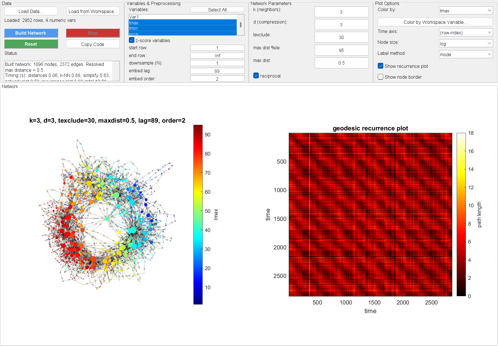

Interactive App¶
gui/TemporalMapperApp.m is a point-and-click alternative to the scripted
pipeline in the Quickstart — load data, pick variables, set
parameters, and view the resulting network without writing any code. It wraps
exactly the same two-step pipeline (tknndigraph → filtergraph) and the same
plotting functions (plottmgraph/plotgraphtcm) described elsewhere in these
docs, so everything in Concepts about what the parameters mean
still applies.

The same East Lansing weather dataset and parameters as the Quickstart, built through the app instead of the command line.
Launch it¶
Layout¶
The window is split into two parts: four Setup panels across the top, and the Network/recurrence plots filling the rest of the window.
Data¶
Load a data file (.csv/.txt, read with readtable) or a table/numeric
matrix already sitting in your base workspace. Only numeric columns are
offered as build variables. This panel also holds Build Network, Stop
(cancels an in-progress build — see below),
Reset (restores every parameter to its default, but leaves your loaded
data and variable selection alone), Copy Code, Export... (see
below), and a live Status box with per-step timing once a build
finishes.
Variables & Preprocessing¶
- Variables — the numeric columns to build the network from (⌘/Ctrl/Shift-click for multiple; Select All as a shortcut). A leading unnamed row-index column is dropped automatically — see below.
- z-score variables — on by default; see the Quickstart's note on why.
- start row / end row — restrict the build to a sub-range of the loaded data.
end row = Infmeans "the last row." - time index — which column says who is temporally adjacent. Defaults to row order; pick a column for data with real breaks (separate sessions/trials). See below.
- downsample (N) — keep every Nth row. A moving-average lowpass is applied first so this doesn't alias high-frequency content into spurious low-frequency structure — see below.
- embed lag / embed order — optional delay embedding; order
1(default) skips it.
Network Parameters¶
The four tknndigraph/filtergraph parameters explained in the
Quickstart and
Concepts: k, d (labeled "compression"), texclude,
the two max dist cutoffs, and reciprocal.
Plot Options¶
Color/time axis variable, node size mode, label method, and whether to show the recurrence plot / a node-border scatter overlay. Changing any of these re-renders the existing network instead of rebuilding it — cheap, and safe to click through freely once a build has completed.
Colouring by a category
Text columns (condition, trial, behavioural state) are offered under
Color by. They are treated as purely nominal: labels map to
integer codes, the colour axis is pinned so each category owns an equal
band (so a category keeps its colour between builds), and mean/median
are withdrawn from Label method — averaging codes 1 and 3 gives
code 2, which is a different category, not an average of two. Pair them
with a qualitative colormap.
They stay out of Variables and Time axis: distances and a time axis both need an order that nominal labels do not have.
Colormap
jet by default, matching plottmgraph's own default. lines,
prism and colorcube are qualitative — adjacent entries are
unrelated rather than a ramp — which is what discrete labels need; the
rest are continuous.
Date columns
readtable turns a date column into datetime automatically, and those
columns are offered for Color by and Time axis — so the GUI can
reproduce tmapper_demo.m's own t = dat.Date axis, with the recurrence
plot labelled in real dates rather than row numbers.
They stay out of Variables, though: distances need real numbers. For
colouring, a date is converted with datenum (a colormap needs numbers,
and plottmgraph calls isnan on the colour variable, which errors on
datetime); the time axis keeps the datetime as-is, since imagesc
takes it natively.
Missing data and downsampling¶
Several things the scripted pipeline leaves to you are handled automatically here:
Oversized row ranges are refused, not attempted
Rather than thrash or exhaust memory, the app refuses up front, before any of the expensive work, and tells you the figure and how to fix it. The count is taken after decimation, so raising downsample (N) is a real fix rather than a way around the check.
The budget is half this machine's physical RAM (clamped to 2–32 GB), not a fixed number — half is a defensible share for one analysis app, and using total rather than currently available keeps the limit stable between runs. If the platform can't be queried it falls back to 4 GB.
Neither the graph build nor the simplification sets that ceiling any
more. The build runs on tknndigraph's lowMemory path, which
computes distances a block of rows at a time and never allocates an
N×N array; filtergraph thresholds geodesics by sparse reachability
rather than materialising them. Both are roughly flat in N.
What remains is the recurrence plot, which is genuinely an N×N image of geodesic distances between time points — the feature itself, not waste. So the ceiling depends on whether you are showing it, and unchecking it is a real way to go bigger:
| Show recurrence plot | Peak memory | Scaling |
|---|---|---|
| on | 4.08 GB at 20 000 points | quadratic — binds first |
| off | 2.10 / 2.13 / 2.14 GB at 20 000 / 40 000 / 56 000 | flat |
With it hidden, memory stops being the constraint entirely, so the guard switches to limiting on time (15 minutes) and says which of the two you actually hit. On a 64 GB machine that works out at roughly 62 000 points with the recurrence plot and 130 000 without.
A stray row-index column is dropped
Writing a CSV without suppressing the index leaves an unnamed first
column, which readtable names Var1. It is just a monotonic ramp, so
leaving it selectable — and selected by default — would silently
dominate the distance computation. It is dropped on load and the status
area says so.
Var1 is a weaker signal than it looks, since MATLAB also auto-names
every column of a genuinely header-less file, so the check additionally
requires that some other column is properly named and that the column
really does look like a row index (numeric and strictly increasing).
A Var1 holding real data is kept.
Missing data is handled, not ignored
A missing value in any selected variable is never passed through to the
pipeline — an unremoved NaN would poison the entire distance matrix
without any visible error. Calling tknndigraph/plottmgraph directly
on unclean data still raises an error, per the usual rmmissing-first
convention.
At downsample (N) = 1 a row with any missing selected variable is
dropped, leaving a real gap in time. When downsampling, each kept sample
is an average over its window and that average simply skips missing
inputs — so an isolated NaN costs no sample at all, and only a sample
whose entire window is missing is dropped. The status area reports the
count either way.
Downsampling anti-aliases first
Setting downsample (N) > 1 applies a moving-average lowpass over a
window of size N before striding, rather than naively picking every Nth
raw row.
Decimation runs on the original row grid, never on the rows left after missing-data removal. Striding the survivors would slide every later sample off the true time grid, inventing gaps between samples that were in fact evenly spaced.
Supplying your own time index
By default tidx comes from row position, which is right for a single
continuous recording. For data with genuine breaks — separate sessions
or trials — pick a time index column instead, and the breaks survive
as breaks rather than being bridged.
The unit is the smallest step between kept samples, so any larger step is a real gap. The column must be strictly increasing and on a regular grid (every step a whole multiple of the smallest); a genuinely irregular index has no integer grid to sit on and is refused rather than silently distorted. Numeric and datetime columns both work.
Real gaps stay gaps in time
tknndigraph's tidx argument is what tells the pipeline which samples
are temporally adjacent — it links two points only when their tidx
differs by exactly 1. The app derives tidx from elapsed position rather
than array position, so a genuine break in the data (a dropped row, or a
restricted row range) leaves a jump and no temporal edge is fabricated
across it.
Stop cancels between, not mid-stage¶
Stop requests cancellation, but MATLAB callbacks run synchronously, so it only takes effect at the boundary between stages (distances → k-NN graph → simplify) — not mid-computation within one. For a very slow single stage (usually the distance/k-NN step on a large dataset), it may take a moment to actually stop.
Export¶
Export... asks for a folder and writes everything needed to carry the result into downstream analysis or a paper:
| File | What it is |
|---|---|
network.png |
the attractor transition network, at 200 dpi |
recurrence.png |
the geodesic recurrence plot (only when it is shown) |
timeline.csv |
one row per retained time point: tidx, source_row, node, plus the chosen colour/time columns |
params.json |
full provenance — every preprocessing and network setting, the resolved maxNeighborDist, and the resulting network's size |
reproduce.m |
the same standalone script Copy Code puts on the clipboard |
timeline.csv is the one that matters most: it is the join-back table saying
which attractor the system was in at each time point, which is what
dwell-time, transition-rate and occupancy analyses actually need — and the
one thing that cannot be recovered from the figures.
The figures are written from the axes rather than the window, so you get just the plot, not a screenshot of the whole GUI.
params.json records the build, not the controls
Every value in it comes from the build that produced these figures, so changing a field after building and then exporting still describes what you are actually looking at.
Copy Code¶
Copy Code puts a complete, standalone script on the clipboard that reproduces the current build — including the data-loading line if you loaded a file — using the exact resolved parameters shown in the app. This is the bridge back to scripting: prototype interactively here, then paste the generated code into your own analysis once you have parameters you like.
What's next¶
- Concepts — what the network's nodes, edges, and loops mean.
- Quickstart — the same pipeline, scripted end to end.